VRAM8GBでStable Diffusion/Forge高速化！＆Stability Matrixを使った導入方法！(起動構成)
どうもみなさんこんにちはnyakorです。今回はVRAM8GBでout of memoryにならずに早く高画質で画像生成する起動構成を紹介します。
VRAMが足りません...(out of memory)少ないVRAMを使っている人はほぼ必ず出会ったことのあるエラーだと思います。2026年現在 最新グラボはVRAM16GBとか24GBが当たり前ですが、僕のRTX 2070SUPER(VRAM8GB)でもあきらめるのはまだ早い!今回は僕がVRAM8GBでも戦える高画質＆爆速設定を公開します。(windwosのみ)
Stability Matrixって何？
AI画像生成(Stable Diffusion)を始めるとき、普通はGitだったりPythonとかの難しい設定が必要なんですが、Stability Matrixを使えばGitやPythonとかの設定を全部スキップできる神ツールです。
Forge、Automatic1111、comfyUIなど、複数のAIツールを切り替えることができます。
10GB以上あるモデルを
1. StabilityMatrixの導入
まず、本家のWebUI（Automatic1111）よりも動作が軽いStable Diffusion Forgeを使うのが鉄則です。これだけで、VRAMの管理が劇的に楽になります。
導入方法はまず公式のStability Matrix配布ページに移動します。https://github.com/LykosAI/StabilityMatrix そのあとに最新のzipファイルをダウンロードしましょう。
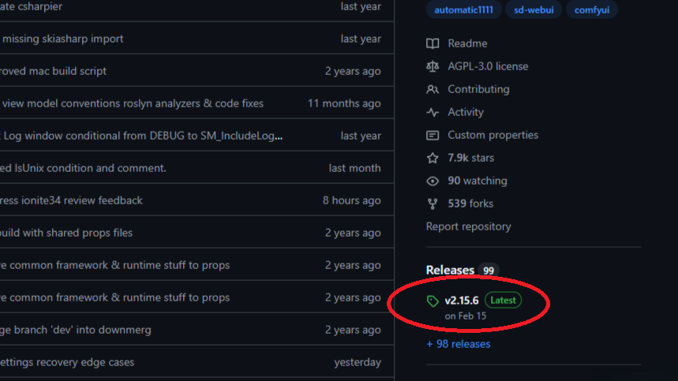
まず赤い円のところを押して..ダウンロードページに飛びます。
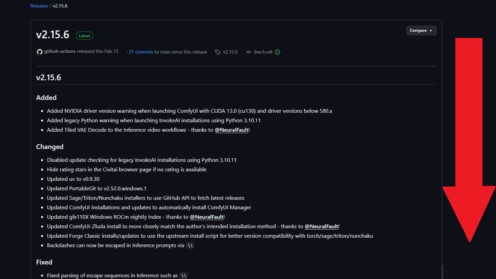
下のassetsを押して(押してあればそのまま)下のStabilityMatrix-win-x64を押してダウンロードしましょう。
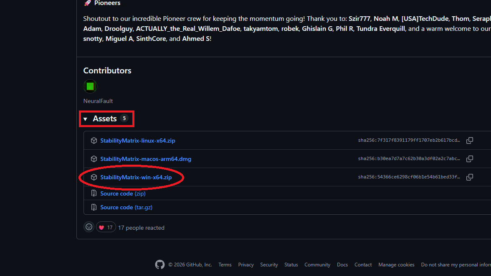
そのあと解凍してインストーラーを実行します。好きなフォルダを選んでインストールしてください。そうしたらメニューからパッケージを押してStable Diffusion WebUI Forge - Neoを追加してください。
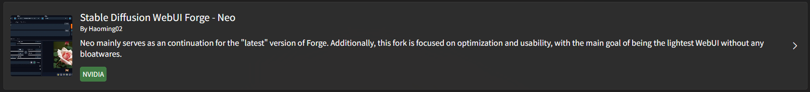
インストールが終わったらLaunch Options(起動オプション)を押してLaunch Options(起動オプション)を押して設定を仕上げましょう。歯車マークを押してください。赤い四角がおすすめの設定です。
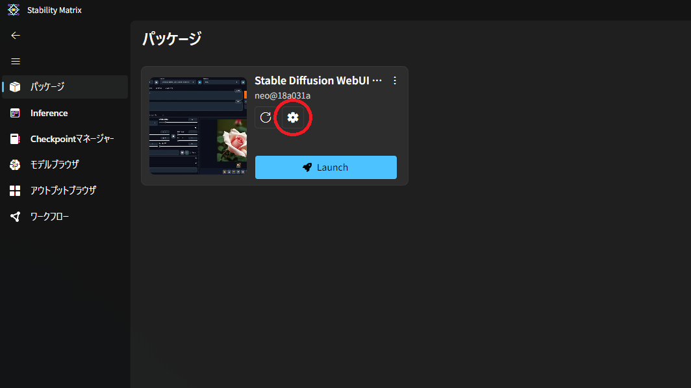
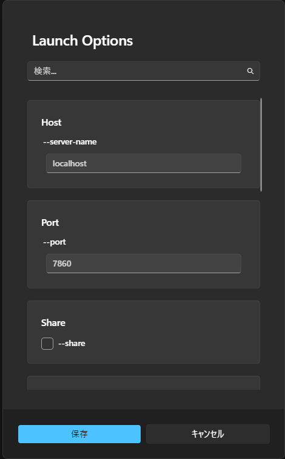
ここにはなにも入れなくてOKです。
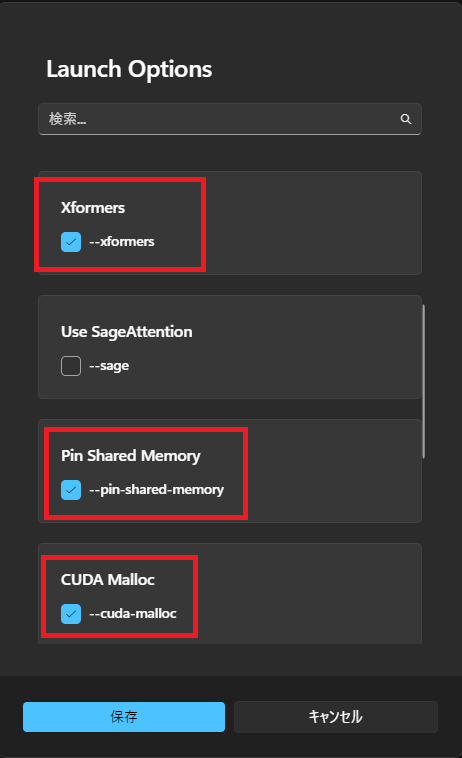
1. Xformers これは、AIが画像を計算する方法を劇的に効率化してくれます。メリット： 画像の生成スピードが上がり、VRAMの使用率も下がります。画像生成するなら、オンにしといて損はないです
Pin Shared Memory VRAM 8GBには、高画質な絵を描くには少し足りません。メリット： この設定をオンにすると、VRAMが足りなくなった時に、PC本体のメモリを作業スペースとして使わせることができます。これによって、メモリ不足で画像生成が止まるのを防ぎ、粘り強く画像を完成させてくれます。
CUDA Malloc これはVRAMを効率よく使ってもらうようにグラボに指示してくれます。メリット：
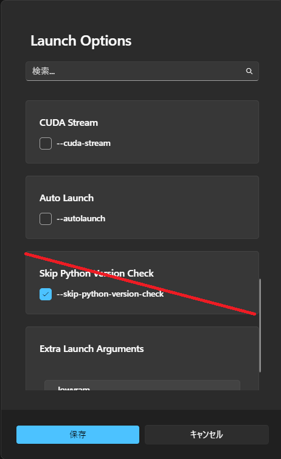
Skip Python Version Check これはPythonのバージョンチェックをスキップする設定です。オンにすると起動が早くなりますが、画像生成には影響がなくオンにしてもしなくてもいい設定です。(オンにするとアップデートが来てることに気づかないかもしれません)
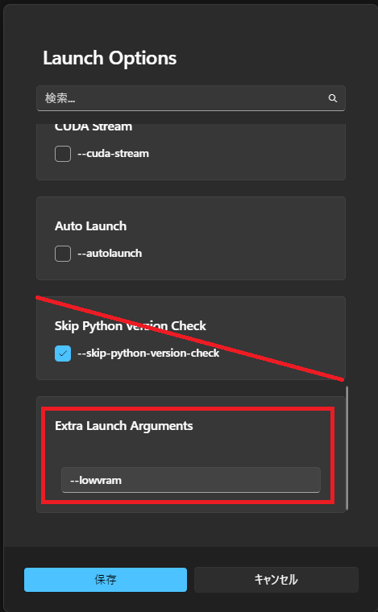
一番下にある Extra Launch Arguments は、リストにない設定を書き込むことができる場所です。lowvram これはVRAMを節約してくれる設定です。メリット: これをオンにするとメモリ不足で停止することが減ります。画像生成が安定化します。デメリット: メモリを節約するので重い画像とかは速度がすごい落ちます。安定化ならオン、速さならオフのほうがいいです。
このまま起動したいところですが、モデルというAIの脳みそがないとエラーで止まったりバグったりしてしまうので起動する前にダウンロードしておきましょう。
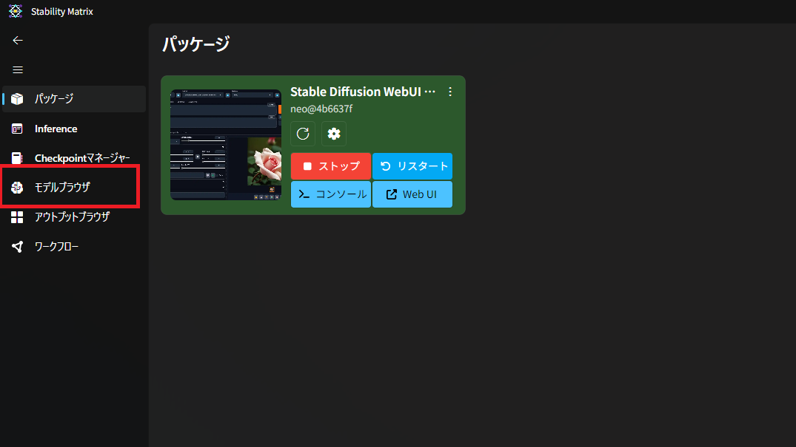
これを押してモデルが出てきたら自分好みのモデルをダウンロードしましょう。おすすめはPony Diffusion V6 XLです。結構重いモデルなのですが、このの記事で紹介した設定をやればメモリ不足でエラーはほぼなくなります。
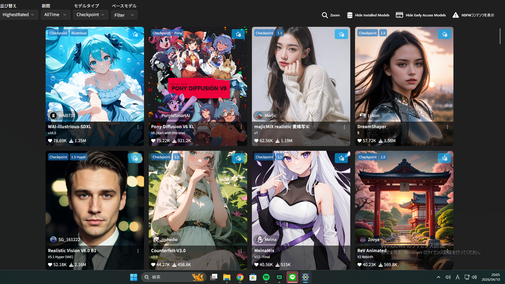
そのあと画面右に青色のダウンロードが出るのでそれを押してください。

モデルをダウンロードする時、たまにログインを求められることがあります。そういうときはCivitaiのアカウントを作っておくと、Stability Matrixと連携できて、ダウンロードがとてもスムーズになるのでおすすめです！ログインしてダウンロードしたらあとは待つだけです。
ダウンロードや設定が済んだら青色のlaunchを押して起動しましょう。webが開いていれば起動成功です。
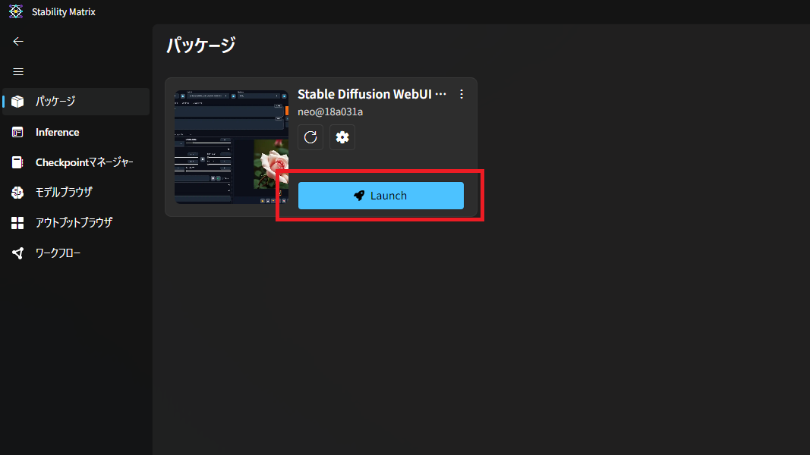
もしwebが開かなかったら上にwebを開くとあるのでそれを押してください。
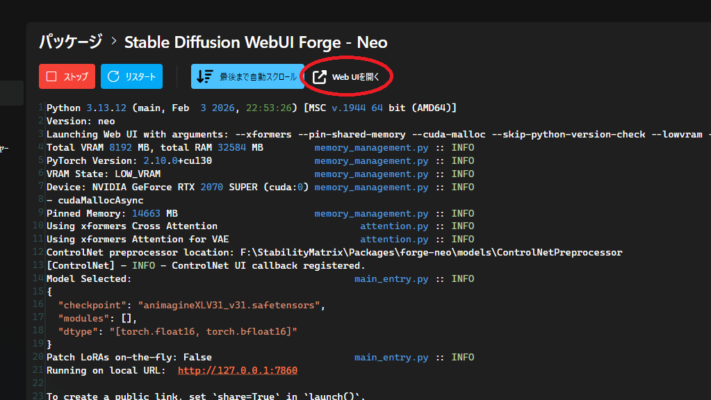
webを開くを押せばwebが開けて画像生成できるようになります。
ということでどうだったでしょうか？今回はStability Matrixの導入方法と起動オプションから画像生成を高速化する方法を紹介しました。webUI内の話は別の記事で紹介しますのでぜひそちらもご覧ください。ちなみに僕が使ってるグラボはRTX2070SUPERなんですが中古で二万くらいで買えました。
もしAIのことなんでもできる最強環境がほしいなら...
RTX5090(VRAM32GB)を買えばマジで画像生成はなんでもできます。というか画像生成なんて余裕でなんでもできます。
AI画像生成の定番なら
RTX4060ti(16gb)かRTX5070(16gb)がおすすめです。RTX5090は70万しますが、RTX4060ti(16gb)かRTX5070(16gb)は15万くらいで買えます。こっちも全然画像生成は余裕です。
安さ重視なら
安さ重視なら中古のグラボを狙うといいです。特にRTX3060(12gb)は3万くらいで買えますでもVRAM12GBあるので画像生成は行けると思います。
次はwebUI内で高速化だったり高画質化を紹介するのでぜひそちらもご覧ください。見てくれてありがとうございました。お役に立てたならよかったです。よい一日を！

VRAM 8GBのRTX 2070 SuperでStable Diffusion／Forgeを使ったAI画像生成の体験記です。負荷のかかる設定の罠、VRAMを節約するヒントなどを紹介します。

webUI内で高速化＆高画質化する設定を8個紹介しています。VRAM８GBでも賢く画質を落とさずに高速化していきます。設定を変えると数秒早くなって効率が上がるのでチェックしてください！
ホームに戻る